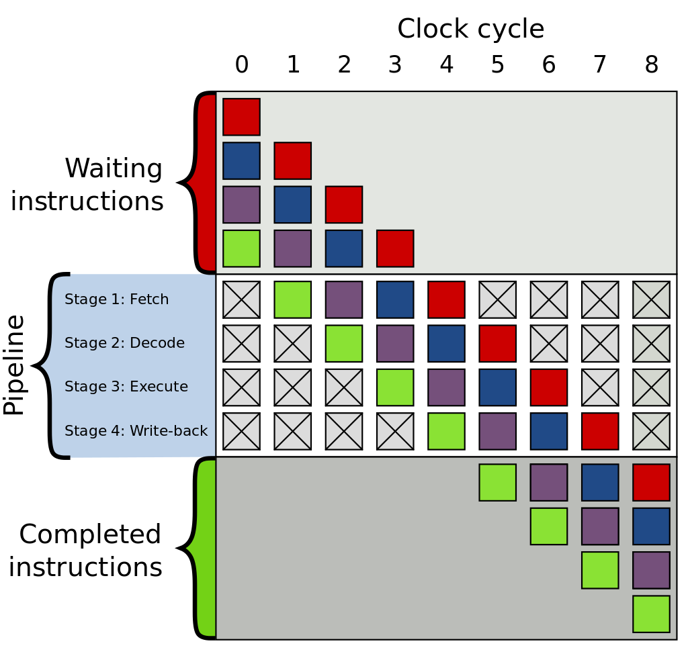

A brief and quick history of chip design
Tom Read Cutting
We will cover:
- The fetch-execute cycle and Von Neumann architecture.
- Moore's law.
- A brief (and incomplete) history of CPU design.
- Implications for you.
NOTE: Things will move quickly! (Still may not be able to cover everything).
Do not hesitate to interrupt and ask questions
Very dynamic, will be asking you questions as well!
What is a computer chip?
A piece of material made with silicon that consists of transistors enabling computations to be performed when provided with an electric current and inputs (as of 2019).
What are we aiming for?
The fetch-execute cycle
- Grab instruction at PC address.
- Decode instruction.
- Execute instruction.
- Repeat.
The Von Neumann Architecture

Most chips use the Von Neumann architecture, so this is the high level mental model we will use.
A note on alternatives, the Harvard Architecture:
Used in some custom chips, can you see the benefits of this? The downsides? We will come back to this.
What allows chips to improve?
In two words: Moore's Law
What is Moore's law?

Gordon Moore, CEO of Intel: "The complexity for minimum component costs has increased at a rate of roughly a factor of two per year."
ASIDE: Moore's Law is not a 'real' law
Heavy debates about it being a self-fulfilling prophecy.
Why does this allow for faster chips?
- We take it as a given, but why?
- What is CPU speed anyway? Are they just clock cycles?
- What about multi-core CPUs?
- What about the instructions themselves?
- This is where chip design comes in.
Designing an old Von-Neumann CPU
What are our constraints?
- Low transistor density.
- Low amount of memory.
Implication of constraints
- Distance between transistors high (increased time of information transition) -> low clock frequencies.
The CISC CPU
Complex instruction set computer
- Many, complicated instructions.
- Variable length encoding.
- Simple(r) chip design.
- Single-Core.
- Always-addressable pool of memory.
What trade-offs are we making here?
Evolving CPUs
A tale of new possibilities and evolving constraints
Three big stories:
- Moore's Law
- Memory Size
- The Operating System behemoth
How do the constraints change?
- Higher transistor density.
- More heat generation.
- Multitasking desired.
Brief overview OS support
- Virtual paging.
- Time-slicing.
- Privileged execution.
- Generic BUSes.
We can cover these in depth another time...
Now onto the good stuff...
- Instruction pipelining
- RISC architectures
- Register file support
- Branch prediction
- Caching
- Multi-core support
Admittedly a lot to cover! So brief explanations of how they work and analyses of the tradeoffs they make.
Instruction pipelining
Pipelining is a great way to improve clock speeds, why?
Instruction pipelining tradeoffs:
- ✔️ Less to do each cycle: shorter cycles.
- ❌ Are limited by the longest stage of the pipeline.
- ❌ Higher Frequencies = More Heat.
- ❌ What about branching?
- ❌ What if a stage takes +1 cycles?
- ❌ More silicon required.
All the other techniques essentially exist to help mitigate the effects of pipelining, although it is still an important part of CPU architectures today.
Register file support
Have on-chip memory for storing data which instructions can refer to.
Register file support tradeoffs
- ✔️ Shorter instructions if operating on same data multiple times.
- ✔️ Don't have to fetch/store in main memory every instruction.
- ❌ Need more silicon to for data storage.
- ❌ Hard to optimise register usage correctly.
- ❌ Transparent to programmer: new registers won't improve old programs.
Modern CPUs can actually use register renaming to have virtual registers.
RISC Architecture
Reduced instruction set computer
The goal is to instructions simpler, and therefore easier to decode.
RISC tradeoffs
- ✔️ Fewer cycles per instruction = shorter pipelines.
- ❌ More memory for instructions.
- ❌ Can no longer have specialised hardware for specialised instructions.
- ❌ Must load data into register files before use.
Branch prediction
The goal is predict which branch the code will take, reducing the changes of a pipeline "flush".
How does it work at a high level?
Program Counter (PC) indexes a table of data containing historical information about the execution.
Can't be complex!
Types of branch prediction
- n-bit saturating counters.
- Global branch prediction.
- Tournament branch prediction.
- And many more!
Branch prediction tradeoffs
- ✔️ Reduces chance of pipeline flush.
- ❌ Adds a lot of complexity.
- ❌ What if two PC's index same location in table? (Think hash table collision).
Caching
Problem: We are limited by the speed of light.
Clock cycles have gone up, memory access latency hasn't changed much.
DRAM Access is 240 cycles!
What does the cache bring?
- Register File Access: 1 cycle
- L1 CACHE hit: 4 cycles
- L2 CACHE hit: 10 cycles
- L3 CACHE hit: 40 cycles
- DRAM Access: 240 cycles
In human terms...
- Register File Access: 1 day
- L1 CACHE hit: 4 days
- L2 CACHE hit: ~one week
- L3 CACHE hit: ~one month
- DRAM Access: ~2/3rds of a year
On the L1 cache...
L1 caches are often separated into separate 'instruction' and 'data' caches. What does this remind you of?
Caching tradeoffs
- ✔️ Reduce memory access cost
- ✔️ Invisible to programmer
- ❌ Invisible to programmer
- ❌ Very visible to programmer
Multi-core support
Why not have multiple CPUs on the same chip?
Multi-core support tradeoffs
- ✔️ Lower clock speeds heat.
- ✔️ Simpler pipelines (and all the problems that come with them).
- ❌ Added complexity.
- ❌ Race conditions.
- ❌ Cache coherency.
- ❌ May need more I/O.
- ❌ Too many to count...
Bringing it all together, we have covered:
- The physics layer.
- The fetch-execute cycle and Von Neumann architecture.
- Moore's law.
- A brief (and incomplete) history of CPU design.
- Implications for you?
Why this is important (1):
The design of hardware has a *massive* effect on the software that runs on it!
Increased design complexity has massively increased the importance, prevalence and necessity of software abstractions.
Why this is important (2):
Yet, almost paradoxically, complex designs means that subtle changes can have massive effects on functionality and performance!
However, powerful hardware can mitigate the performance impact of application in isolation.
Yet, we are asking our computers to multi-task more-and-more every day! The sum-total can still be quite bad!
Final points
- I hope you found this interesting.
- Hardware design is important.
- Multi-core is here to stay, we need to learn how to use it.
- Memory access-patterns are a big deal, be cache-friendly!
Future hardware talk possibilities
- Any topic here, but in depth.
- Cache design.
- Cache coherency.
- SoC design.
- GPU design.
- OS support.
- The physics of silicon chips.
Thank you! Any questions?
Although shallow and brief, hope this gives you an idea about how CPUs can be designed and optimised.